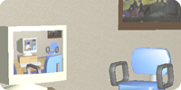
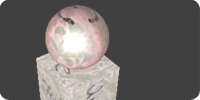
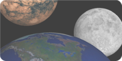
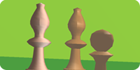

| jeff young | ||
| :: home :: portfolio :: resume :: | ||
|
The end result of my studies with OpenGL
was an application that builds scenes by parsing text files containing
scene directives and polygon mesh definitions, simi liar in nature to
the Renderman specification.
The application and a number of rgl format scene files are provided below. The scene files were chosen to demonstrate a particular technique discussed during the course. |
|
|||||
|
|
||
|     |
Instructions
-> Download RenderGL and scenes -> The images to the left are some of the scenes included in the zip file. Here's a description of each scene file.
|
||
| all content copyright © 2004-2005 jeff young |